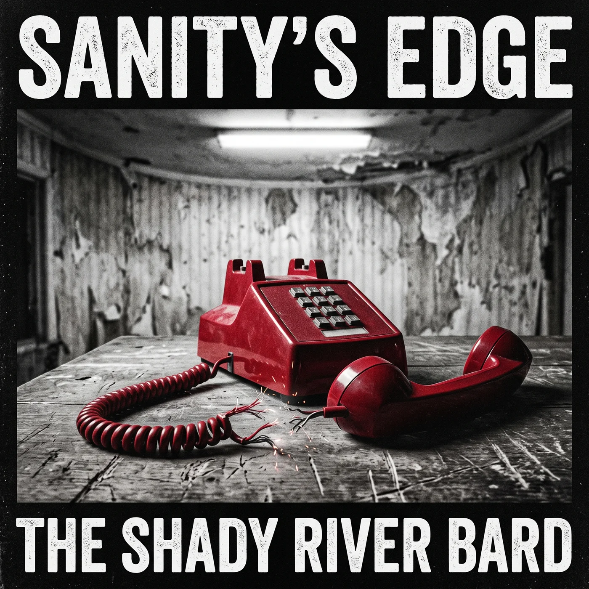
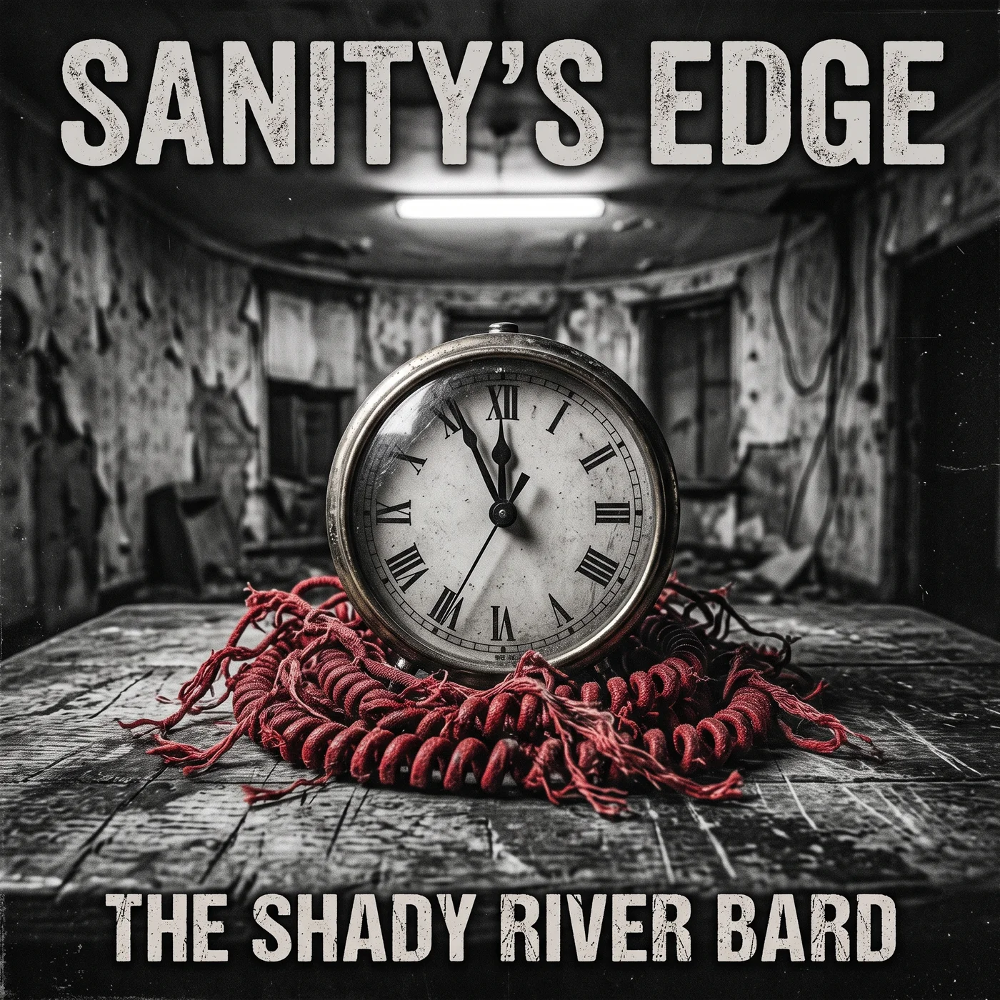
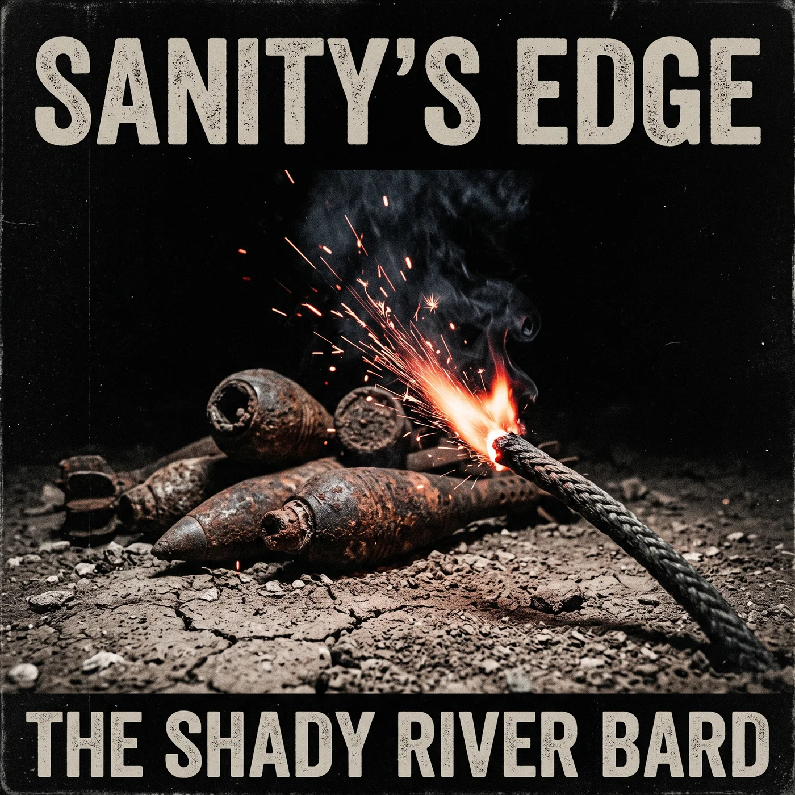
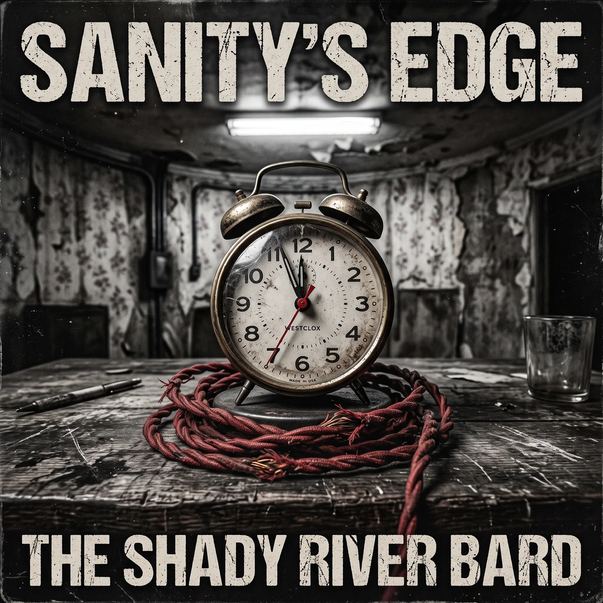
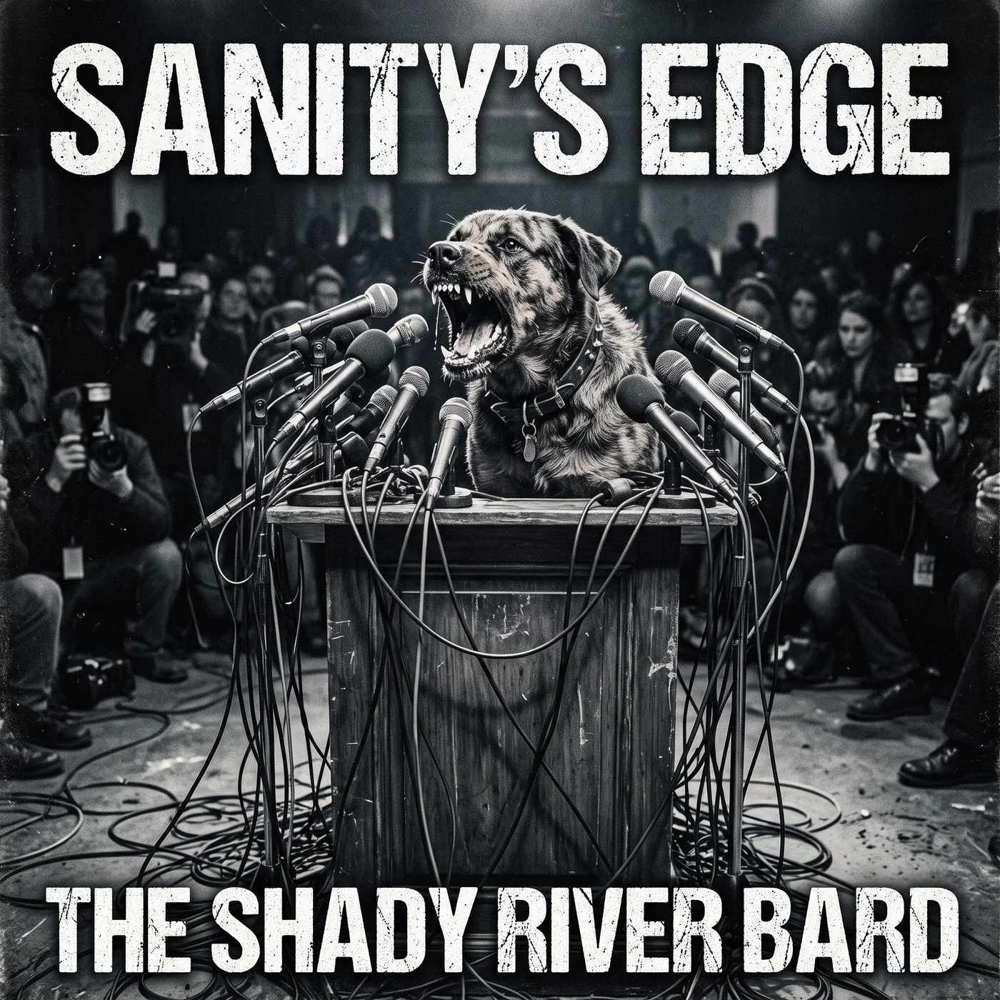
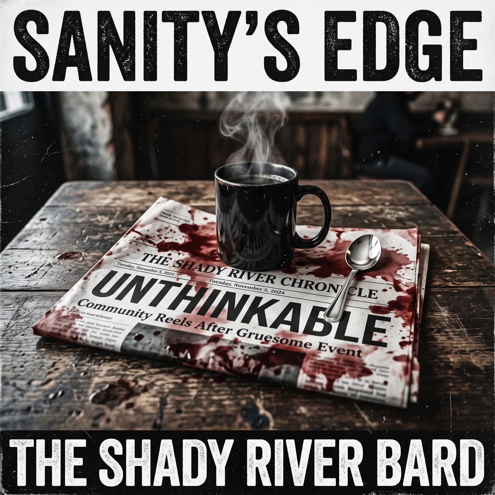

SANITY'S EDGE
"How much danger can a nation normalize before the abnormal becomes ordinary—and the person holding unilateral war power is himself erratic?"
Sanity's Edge is an unflinching, 15-track forensic concept album and analytical journey confronting the intersection of imperial overstretch, psychiatric despair, and unilateral nuclear risk. Grounded in empirical data, the album traces the terrifying reality of permanent war—from deindustrialized hometowns hollowed out by addiction, to the 2026 U.S.-Iran brinkmanship where the Doomsday Clock plunges to 85 seconds to midnight.
Sanity's Edge
A Pivot to Muscular Experimental Classic Rock
Previous albums by The Shady River Bard relied on intimate acoustic instruments: delicate banjos, weeping cellos, and acoustic guitars. For Sanity's Edge, the geopolitical crisis and psychological dread required a violent sonic pivot. The banjos and cellos have been banished in favor of jagged fuzz guitars, driving bass grooves, industrial synthesizers, and powerhouse male/female duet vocals.
Pink Floyd's Animals
Updating Orwell's tri-part taxonomy for the 21st century: Pigs (the defense contractors and oligarchs), Dogs (the outrage algorithms and partisan media enforcers), and Sheep (the exhausted, manipulated citizenry).
Neil Young & Crazy Horse
Channeling the raw, overdriven urgency of Rust Never Sleeps and Living with War. Gritty electric guitar solos that sound like mechanical distress signals, siren alarms, and industrial decay.
The Duel of Dual Leads
A weathered, grounded Southern male baritone contrasts with a soaring, cutting female rock vocalist. Their interplay tracks the psychological progression from denial, to frantic dread, to common-ground solidarity.
The Songs of Sanity's Edge
Click any track to stream in high fidelity. Filter by narrative movement or search lyrics, musical cues, and vocal frameworks. Zero AI prompts—only pure literary poetry.
5 Thematic Pillars: The Anatomy of Crisis
Behind the poetry of Sanity's Edge lies rigorous historical and statistical reality: Pentagon budget audits, atomic countdown archives, epidemiological mortality data, and Orwellian class dynamics.
Imperial Overstretch & The Trillion-Dollar Warfare Engine
While official DOD base budgets cite ~$850B, true national security spending includes Department of Energy nuclear warhead maintenance ($33B), Veterans Affairs medical systems ($303B), intelligence black budgets ($115B), and the compounding interest on past war debt ($450B+). Over 750 overseas bases are maintained abroad while basic domestic systems fall into ruin.
The Nuclear Precipice: The 85-Second Countdown
The Bulletin of the Atomic Scientists' Doomsday Clock is an empirical reflection of existential risk. Following the dissolution of the INF and Open Skies treaties, the modernization of tactical warheads, and the 2026 U.S.-Iran threshold crisis, decision times have been compressed to under 15 minutes. Track 11 acts as the album's structural countdown.
Deaths of Despair & The Domestic Ruins
Documented by Case & Deaton, "Deaths of Despair" encompass the mortality spike from opioids, alcoholism, and suicide in working-class communities abandoned by capital flight. While billions flow overseas, domestic clinics close and life expectancy drops in the exact rust-belt towns furnishing frontline military recruits.
Allegory of the Architect: Pigs, Dogs, and Sheep
Updating Pink Floyd's 1977 masterpiece Animals, the album maps the three archetypes driving 21st-century permanent conflict. Click each archetype below to inspect its role and musical presence.
The Pigs
The War ProfiteersContractors, donors, and think-tank architects profiting off permanent conflict.
The Dogs
The EnforcersRage-bait media pundits and algorithm engineers policing public consensus.
The Sheep
The CitizenryThe polarized working class manipulated into horizontal hostility while paying the bill.
Affective Polarization: The Shield of the War Machine
Affective polarization—where opposing partisans view each other as evil rather than simply mistaken—serves as the indispensable defensive shield of the military-industrial complex. As long as citizens across the street hate one another over social media disputes, they will never unite to audit the $2.3 trillion extracted annually from their paychecks. The climax of Sanity's Edge (Act IV: "Wake the Flock" and the title track) offers the ultimate antidote: conscious, horizontal solidarity.
Comprehensive Thematic Matrix
Connecting Core Causes, Key Manifestations, and Dramatic Outcomes across all 5 societal fault lines.
| Thematic Fault Line | Core Causes | Key Manifestations | Dramatic Outcomes |
|---|
Master Visual Exhibits
High-resolution concept artwork generated for Sanity's Edge, depicting the industrial engine, the nuclear switch, and the domestic ruins.





